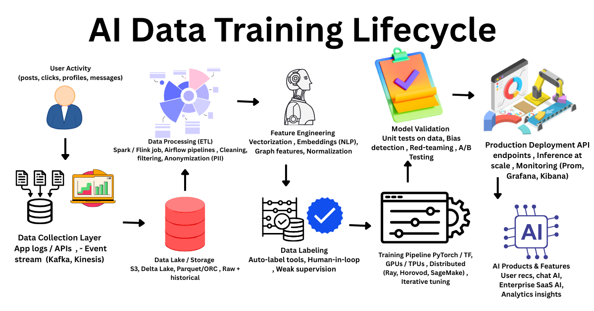
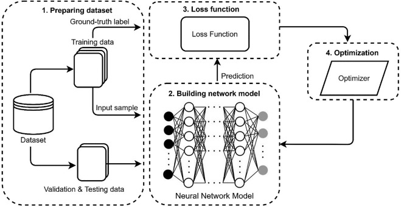

Before an AI can generate images, write text, or clone a voice, it must first learn — and that learning process, called training, depends entirely on the quality and quantity of data it consumes. Understanding where that data comes from is the first step to understanding how AI-generated media is made.
What Is AI Model Training?
AI model training is the process by which a machine learning system learns to perform a task by studying large amounts of example data. Think of it like teaching a child to recognize animals: you show them thousands of pictures of cats and dogs, and over time they learn the patterns that make each animal distinct. AI models do the same thing, but at a scale that is almost impossible to imagine — often processing billions of examples over weeks or months using powerful computers.
During training, the AI adjusts its internal settings, called parameters or weights, every time it makes a mistake. If the model incorrectly labels a photo or generates a blurry image, its internal values are updated slightly so that it performs better next time. This process is repeated millions or even billions of times until the model reaches an acceptable level of accuracy.

Where Does the Data Come From?
The data used to train AI models comes from many different sources. For text-based models, common sources include books, news articles, academic papers, websites, forums, social media posts, and even Wikipedia. For image-based models, training data often includes photos scraped from the internet, stock image libraries, and publicly available image datasets. Audio models may be trained on music libraries, podcasts, speeches, and recorded conversations.
Some of this data is collected with permission, such as when companies license datasets from publishers or contributors. However, a significant portion of training data has historically been collected through web scraping — automatically downloading content from websites — without the explicit consent of the original creators. This practice has sparked major ethical and legal debates about copyright and intellectual property.
Text Data
Books, websites, forums, news articles, and academic papers scraped from the internet.
Image Data
Photos from social media, stock libraries, and public image datasets like ImageNet.
Audio Data
Music, podcasts, recorded speeches, and voice samples from various online platforms.
Video Data
Clips from video-sharing platforms, documentaries, and publicly available recordings.
How Training Actually Works
Most modern AI models are trained using a technique called deep learning, which uses structures called neural networks. These networks are loosely inspired by the human brain and consist of many layers of interconnected nodes. Each layer processes the data differently — early layers might detect basic patterns like edges or sounds, while deeper layers recognize more complex concepts like faces or sentences.
The training process begins by feeding the neural network a batch of data. The model makes a prediction or generates an output, and that result is compared to the correct answer. The difference between the prediction and the correct answer is called the loss. The model then uses a mathematical process called backpropagation to adjust its weights in a way that reduces the loss. After enough repetitions across enough data, the model becomes capable of performing its task reliably.

Types of Training Data
Not all training data is the same. Researchers classify it in several important ways depending on how it is labeled and how it will be used by the model.
-
1
Labeled Data
Each example comes with a correct answer or tag. For example, an image labeled "cat" teaches the model what a cat looks like. Labeled data is expensive and time-consuming to produce.
-
2
Unlabeled Data
Raw data with no tags or annotations. Models trained on unlabeled data must find patterns on their own, which is the basis of unsupervised learning.
-
3
Synthetic Data
Artificially generated data created by other AI systems. This is increasingly used when real data is scarce or too sensitive to collect.
-
4
Human Feedback Data
Ratings and corrections provided by human reviewers who evaluate the model's outputs. This is essential for training conversational and generative AI systems.
Problems With Training Data
The quality and composition of training data directly shapes what an AI model can and cannot do — and what biases it may carry. If the training data contains mostly images of one type of person, the model may struggle to accurately represent others. If it is trained on news articles that favor a particular perspective, its generated text may reflect that bias. These are not hypothetical concerns; they are well-documented problems that AI developers actively work to address.
An AI model is only as good — and as fair — as the data it was trained on. Garbage in, garbage out is more than a saying; it is a law of machine learning.
— Principle of Data Quality in Machine LearningPrivacy is another serious issue. Training data collected from the internet may include personal information that people never intended to share with AI companies. Faces, voices, and writing styles can all be captured and used to train models without the knowledge or consent of the individuals involved. This has led to growing calls for stricter regulations around data collection and model training.
Many AI models have been trained on data that was collected without the explicit consent of the original creators. This raises serious questions about intellectual property, privacy, and fairness that are still being debated in courts and legislatures worldwide.
Why This Matters for Media
Understanding how AI models are trained is essential for anyone who wants to critically evaluate AI-generated media. When a model generates a realistic-looking news photo that never happened, or writes a convincing but false news article, it is drawing on patterns it learned from real media — real photos, real writing, real voices. The output may be entirely fabricated, but it is constructed from fragments of the real world.
This means that AI-generated media can be extremely convincing precisely because it is modeled on genuine human-made content. The more data a model is trained on, and the higher the quality of that data, the more realistic its outputs will be. Recognizing this connection helps us understand why AI-generated fakes are becoming harder and harder to detect without specialized tools.
What We've Learned
AI model training is the foundation of every AI system that generates media. It is a process of learning from vast amounts of data — text, images, audio, and video — collected from across the internet and other sources. Through deep learning and neural networks, models adjust themselves over millions of repetitions until they can generate convincing outputs on their own.
However, this process is not without serious concerns. The data used to train these models may be biased, collected without consent, or include private information. These issues directly affect the fairness and safety of the AI systems built on top of that data. By understanding where training data comes from and how it shapes AI behavior, we become better equipped to recognize AI-generated media and think critically about the technology behind it.
Every AI-generated image, video, or piece of text is the product of a training process built on real human-made content. Understanding this connection is the first step to becoming a more informed and critical consumer of media.